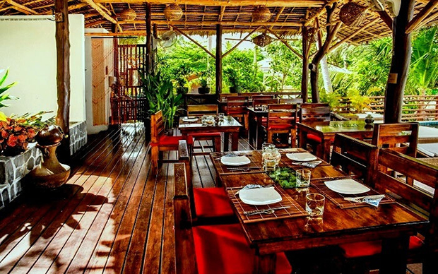
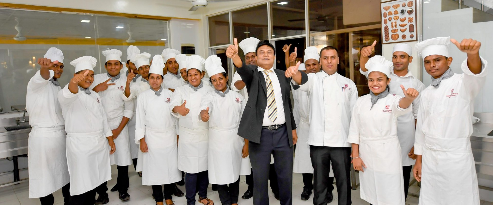

About The Diner Cafe
Authentic Sri Lankan dishes, cooked without artificial flavours, on Duplication Road in Colombo 03.
A relaxed table in the middle of the city
The Diner Cafe has been owned and run since 1994, at Liberty Arcade, No. 282, R.A. De Mel Mawatha, Colombo 03. Guests come for stress-free outdoor dining that feels far from the traffic.
Bring your family, mark a birthday or anniversary, plan a date night or gather a group. The room is casually elegant and intimate, and the food arrives hot, fresh and generous, with pickles on the side.

At lunch
The buffet begins at the salad corner and moves on to three kinds of rice, fish, crab and chicken curries, 15 vegetable curries, and grill and hopper stations. Finish with 10 to 12 desserts and tea or coffee. The juice corner serves fresh juices and king coconut, a treat many star hotels don’t offer.
At dinner
Dinner adds night-time favourites: kotthu rotti, pol rotti, string hoppers, pittu and macaroni, with 10 vegetable items and hot prawn curry beside the chicken, fish and crab. A violinist, pianist or saxophonist plays every evening.
The kitchen
Our chefs blend up-country and low-country styles, using freshly collected spices and no artificial flavours, for sweet, tasty and hot dishes day and night.
